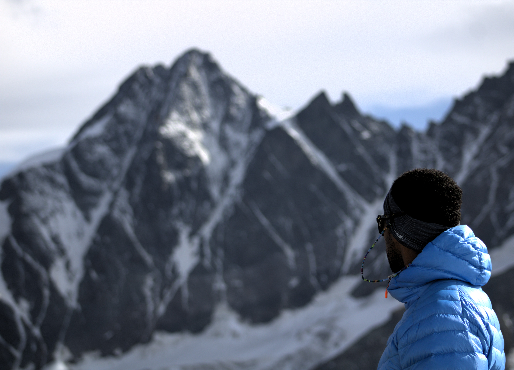

My name is JB, I grew up in France where I studied Electronics and Embedded Systems Engineering.
I first discovered the mountains during my university years in the French Alps, but it's only when I moved to Austria as an engineer that I really started spending serious time outdoors — hiking, skiing, climbing, etc.
What started as a hobby has become a real passion. If I could, I'd be out there every single day.
I've now lived in Austria for about 5 years and created this website to share some of its hidden beauty — the spots that often go unnoticed beyond the famous peaks and routes.
I hope you enjoy it!